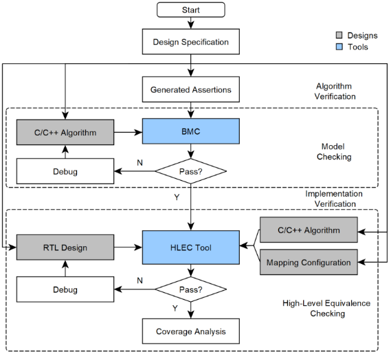
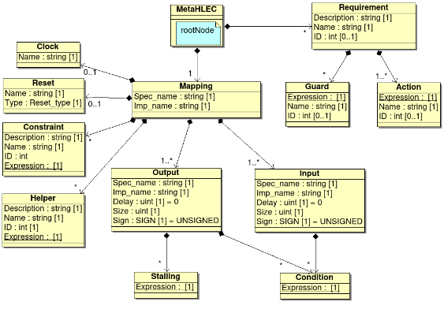
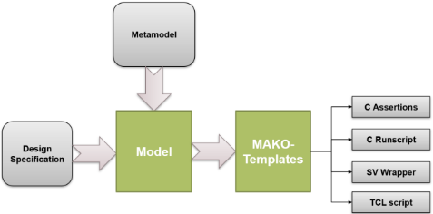
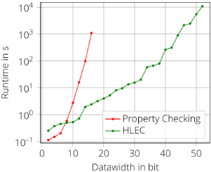
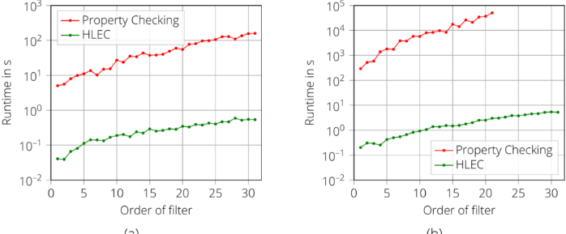

Verifying Non-friendly Formal Verification Designs: Can We Start Earlier?
验证对 Formal Verification 不友好的设计：我们能否更早开始？
简介
论文针对乘法器、FPU、滤波器等对 FPV 不友好、状态空间爆炸导致验证不收敛的 datapath 设计，提出 MetaHLEC 方法论与配套自动化框架：第一步在设计早期对无时序的 C/C++ 算法参考模型自动生成 assertion 并用 BMC（CBMC）在秒级完成穷尽验证，先确认算法本身正确；第二步以该参考模型与 RTL 实现为输入，用商业 HLEC（C2RTL 等价检查）工具结合 metamodel 中的映射与调度信息证明实现等价。metamodel 经 GUI 实例化为 XML，并用 MAKO 模板自动生成含 property 的 C harness、runscript 与 SV wrapper，避免手工编写易错的 SVA。结果显示 FPU 的 10 条 assertion 在软件层 4.9s 内证完、HLEC 40.9s 全证明，而等效 FPV 无法得出可比结果；除法算法可验证到 52bit，FIR 8bit 场景平均加速 177 倍，方法尤其适合 safety-critical 的 requirement-driven 开发流程。
问题
对乘法器、FPU、滤波器及复杂算法等 non-friendly 形式验证设计，FPV 因状态爆炸在位宽增大时无法收敛；概念阶段的算法错误通常要等到 RTL 验证阶段才被发现；手工编写 SVA property 耗时且易引入结构性错误；仿真无法证明所有输入组合下不存在 bug，难以满足 safety-critical 设计的可靠性要求；此外 HLEC 虽已被提出，但其在工业工具链中的使用流程此前未被定义。
方法
提出 MetaHLEC 两步方法论与自动化框架：(1) Algorithm Verification——设计规格确定后，对无时序的 C/C++ 算法参考实现，由 verification plan/metamodel 自动生成 C assertion，用 BMC 工具（CBMC）在秒级完成穷尽验证，将算法确认为 golden reference model；(2) Implementation Verification——以该 C/C++ 参考与 RTL 实现为输入，用商业 HLEC 工具结合规格中的调度/吞吐约束证明等价。核心手段是 metamodel（MetaHLEC）：以 GUI 引导实例化为 XML，捕获功能需求与 mapping 信息（时钟、复位、端口、operating/stalling 条件与延迟），再经 MAKO 模板自动生成含 property 的 C harness、runscript 和 SV wrapper，实现从模型到验证环境的全自动转换，快速适应需求变更并减少人为错误。
关键结果
FPU 设计的 10 条 assertion 在软件层 4.9s 内证明，HLEC 40.9s 给出完整证明；等效 SVA 的 FPV 因状态爆炸无法获得可比的 model checking 结果
Unsigned SIMD Multiplier（4 种操作模式）、32-bit 浮点乘法单元（4 种操作模式）、Quadratic Fractional Polynomial 的验证时间分别为 195.5s、45.8s、138.3s
可扩展无符号除法算法：HLEC 在 24h 超时内可验证至 52bit 数据宽度；位宽低于 8bit 时 model checking 更快，但 HLEC 运行时间增长更慢、可扩展性更好
FIR 滤波器 8bit（1~31 阶）HLEC 平均运行时间降低 177 倍；16bit 下 property checking 仅能证明到 21 阶（24h 超时），本方法可穷尽证明到 31 阶；32bit 在 54s 内证明到 64 阶，而 FPV 任何阶数均无结论
工业 ECC 设计：32bit SEC/DED 仅 5.7s 完成证明（为 linearity 方法约 1/3 的运行时间）；64bit、3/4 纠错/检错时 CBMC 1s 完成，EDA HLEC 工具超时，FPV 工具耗时 16016.93s；更大位宽与更强纠错能力的实现不可验证
实验环境：商业 EDA 厂商的 C2RTL HLEC 工具与 FPV 工具、CBMC-5.73.0、Z3-4.12.0，超时设为 24h
创新点
与已有 C/C++-RTL 形式等价方法依赖未经正确性验证的 golden C/C++ 参考模型不同，MetaHLEC 先用自动生成的 assertion 对算法参考本身做 BMC 穷尽验证，再将其复用于 HLEC；同时通过 metamodel 形式化规格并自动生成验证环境（assertion、harness、runscript、SV wrapper），给出了 HLEC 在工业工具链中的可操作流程，避免手工建模 SVA 的易错与耗时，并支持 requirement-driven 流程集成。
团队参考意义
相关度级别：medium
命中能力域：2.5 功能安全与安全机制 | 2.7 CyberSec/自动化
理由：论文核心是 FPV/HLEC 形式验证方法论，不直接命中 2.1 DFT/ATPG、2.6 Fault simulation 等域的核心技术（其 HLEC 是 C2RTL 等价检查，与 2.1 中 Formality 网表等价检查场景不同）。评为 medium 的依据有二：(1) 方法明确面向 safety-critical、requirement-driven 流程并给出 ECC 穷尽验证案例，可借鉴到 2.5 中对 datapath 安全机制（ECC/CRC/parity 等）的 safety verification 与证据链建设；(2) metamodel→XML→模板自动生成验证资产的工程自动化思路，与 2.7 的自动化方向（Data Source 到 FMEDA/DFMEA/JAMA export 自动化、checklist 自动化、AI/agent 辅助流程）在'规格形式化驱动自动生成'的方法论上相通。团队的高速存储/互连 IP 含大量算术与训练 datapath，同样面临 FPV 不友好问题，但论文不涉及 DFT/ATPG、fault injection、FMEDA 等团队核心交付物，故非 high。
建议动作：作为方法参考存档
中文全文
Verifying Non-friendly Formal Verification Designs: Can We Start Earlier?
Bryan Olmos，莱茵兰-普法尔茨工业大学凯泽斯劳滕-兰道，英飞凌科技股份公司，德国慕尼黑（bryan.olmos@infineon.com）
Daniel Gerl，英飞凌科技股份公司，德国慕尼黑（daniel.gerl@infineon.com）
Aman Kumar，英飞凌科技股份公司，德国慕尼黑（aman.kumar@infineon.com）
Djones Lettnin，英飞凌科技股份公司，德国慕尼黑（djones.lettnin @infineon.com）
摘要 - 由于技术的不断进步，片上系统（SoC）的设计正变得越来越复杂。被遗漏的缺陷可能在安全关键环境中引发灾难性故障，从而危及生命安全。为了克服这些灾难性故障，业界已采用形式化属性验证（FPV）。然而，存在许多硬件设计，即使模型检测工具运行很长时间，FPV 的结果仍无法得出结论。因此，近年来有研究提出使用高层次等价性检查（HLEC）工具。然而，如何在工业工具链中使用这类工具的流程尚未定义。为此，我们提出了一种基于元建模技术的自动化方法，该方法包含两个主要步骤。首先，在早期阶段使用生成的断言对用 C++ 编写的非定时算法描述进行验证；这一步骤的优势在于，软件层面的断言可在数秒内运行完成，使我们能够在开始编写寄存器传输级（RTL）设计之前，就基于关于算法的结论性结果开展分析。其次，利用 HLEC 和相应的元模型参数，将该算法描述与其时序设计进行对照验证。结果表明，所提出的方法能够在早期发现与算法描述相关的缺陷，并为 HLEC 验证准备好验证设置。这有助于减少搭建工具和手动编写属性所需的验证工作量，而手动编写属性总是容易出错。所提出的框架可以帮助从事数据通路工作的团队在验证流程的早期阶段进行验证并做出决策。
I. INTRODUCTION
数字设计，尤其是涉及算术函数等复杂数据通路操作的设计，通常始于以 C、C++ 或 SystemC 等高级语言开发的原型 [1]。这些原型是在设计早期阶段探索算法各种实现方式的起点。工程师利用这些原型来验证规格说明，并在将算法实现到 RTL 之前探索体系结构，通过不断改进来优化功耗、性能和面积。
先前的研究已经强调了形式验证（FV）在汽车等关键应用中的适用性，但由于状态爆炸问题，FV 可能无法很好地扩展到更大的设计，尤其是对形式验证不友好的设计，例如乘法器、浮点单元（FPU）、滤波器以及实现复杂算法的设计 [2]。此外，FPV 对算术单元的扩展性也不佳，当位宽增加时，大多数方法都会放弃。一种替代方法是高层等价性检查（HLEC），它提供了一种验证不同设计表示之间功能等价性的技术。对验证工程师而言，这种方法更加直观，因为 HLEC 侧重于比较同一设计的两种不同表示，而不是证明属性。
然而，概念阶段出现的错误通常要到验证 RTL 设计时才会被发现。此外，在采用人工方法时，设计过程的每个阶段都可能引入缺陷。仿真等其他方法无法为安全关键设计提供足够的可靠性。而且，验证时间占整个验证过程总时间的 50% 以上 [3]。出于这些原因，本文提出一种名为 MetaHLEC 的方法学，它通过 HLEC 复用 C/C++ 参考实现，扩展了 FV 在穷尽验证数据通路（如算术函数）方面的应用。该方法学使用一个自动化框架将规格说明形式化，以用于安全关键的、需求驱动的开发流程，从而减少可能导致结构性错误的人工工作。使用元建模技术将规格说明形式化可以最大限度地减少误解，使设计和验证流程的部分环节得以自动化，从而节省时间并提高验证结果和设计的质量。例如，与某一 FPU 设计相关的 10 条断言在软件层面于 4.9s 内得到证明，而 HLEC 在 40.9s 内给出了完整证明。与对包含浮点乘法的等价 SVA 属性进行建模所耗费的时间以及预期的状态空间爆炸相比，这是一个巨大的优势——在这种情况下无法获得可与之相比的模型检查结果。此外，约束随机仿真的其他尝试也无法证明在所有输入组合下均不存在缺陷。
本文的主要贡献包括：
本文其余部分的组织结构如下。在第 II 节中，我们介绍待验证设计（DUV）所面临的挑战以及相关工作。第 III 节描述所提出的方法学和元模型。第 IV 节给出验证结果，包括与 FPV 的比较。最后，我们在第 V 节中总结本工作。
A. Verification Challenges in Datapath Designs
数据通路设计的验证因其固有的复杂性以及所涉及的复杂数学运算而面临重大挑战。这些运算包括并行数据处理、精度要求、流水线操作以及错误检测与纠正。验证这些电路和算法的过程必须考虑各种输入值，由于可能的组合数量与数据位宽相关，这可能颇具挑战性。对于形式验证而言，这种情况很快就会变得难以驾驭。综合考虑可行性、可扩展性和资源利用率，待验证设计可被视为对形式化方法友好或不友好 [2][4]。一方面，对形式验证友好的数据通路设计优先考虑高并发性和低时序深度，同时包含控制逻辑单元和低复杂度的数据变换。这类设计通常涉及并行数据处理，其特点是总线协议经过简化、数据处理直接明了。另一方面，非友好的数据通路则涉及实现复杂总线协议的设计，例如 AXI（Advanced eXtensible Interface，高级可扩展接口）、OCP 2.1（Open Core Protocol，开放内核协议）、PCI（Peripheral Component Interconnect，外围部件互连）；包含复杂算术单元的设计；以及具有庞大状态空间的设计。在本工作中，我们重点关注与以下设计相关的挑战：
2

B. Related Work
Ludwig 等人 [6]、[7] 采用基于仿真的方法来验证 SystemC 模型。然而，由于面向对象结构带来的开销以及仿真特定的语义，SystemC 的形式化验证仍然极具挑战性 [8]、[9]。此外，属性驱动设计的方法也无法缓解数据通路的验证问题。因此，[11] 主张在设计算法电路时使用 C/C++ 而非 SystemC。另一种利用软件验证工具来验证 RTL 实现的方法是将 RTL 翻译为周期精确的 C 代码。Mukherjee 等人 [12] 使用其工具 V2C [13] 将 Verilog 设计翻译为周期精确的 ANSI-C 程序。他们的分析显示出显著的验证加速，尤其是在数据通路密集的设计中。然而，该方法无法在设计早期阶段使用。此外，他们的工具 V2C 仅支持 Verilog [14]。Qurat-ul-Ain 等人 [15] 进行了改进，以修正 V2C 产生的翻译错误。然而，他们使用经过验证的 C 程序来执行高层次综合（High-Level Synthesis，HLS），从而获得优化的 RTL 设计。但是，HLS 设计是通过仿真进行验证的。[14]、[16][17][18] 中所述的方法支持在 C/C++ 参考模型与 RTL 实现之间进行形式化证明。然而，所有这些方法都依赖于黄金 C/C++ 参考模型，却未提供依据规范验证其正确性的手段。
III. METHODOLOGY AND APPLICATION
图 1 中提出的方法学可以在设计规范最终确定后加以应用。在本工作中，该规范被关联到第 III.A 节的元模型中。通常，设计过程始于设计工程师或概念工程师实现一个 C 或 C++ 函数，该函数表示设计的功能或部分功能。由于 C 和 C++ 语言没有定义任何时间概念，该算法不包含有关实现的延迟或吞吐量的信息。然而，考虑到 C 中的属性可以在几秒钟内得到验证（如第 IV 节所示），它可以被高效地用于为我们的算法提供结论性结果。这第一步称为算法验证（Algorithm Verification），是继续进行第二步——实现验证（Implementation Verification）的前提条件。算法验证以 C/C++ 算法参考以及从验证计划生成的断言为输入来执行有界模型检验（BMC）——例如开源工具 CBMC [9]。成功的模型检验穷尽地证明了算法的正确性，从而将该算法实现确认为黄金参考模型。随后，使用来自规范的调度和吞吐量约束将该算法实现为 RTL。在实现验证中，在上一步中已得到验证的 C/C++ 参考算法与 RTL 实现是商业高层次等价性检查（HLEC）工具的主要输入。该工具依据来自规范的调度信息证明待验证设计（DUV）与算法之间的等价性。
3

A. Metamodel MetaHLEC
如上一节所述，验证过程通过两个验证周期开展，这两个周期将分别称为算法验证（Algorithm Verification）和实现验证（Implementation Verification）。这些验证周期所需的信息已被添加到图 2 的元模型中。根节点 MetaHLEC 以 DUV 的名称作为其唯一属性。它可以拥有一个或多个 Requirement 节点（表示 C/C++ 算法必须满足的功能需求），以及一个 Mapping 节点（包含将 C/C++ 算法连接到 RTL 实现所需的全部信息）。该元模型由两个主要节点组成：
4


尽管该模型可以表示为统一建模语言（UML）图，但其实例化结果将以结构化的可扩展标记语言（XML）格式存储。模型的实例化过程由图形用户界面（GUI）引导。
B. Automation MetaHLEC
Based on the XML file associated to the introduced metamodel, the automation framework was developed. It minimizes the user interaction and structural errors. The algorithm specification will be formalized by transforming into guarding and action expressions that define the combinational behavior. The behavioral description is transformed into assertions in the target-language C to perform functional verification of the algorithmic design representation. Information about the design implementation consisting of clocks, resets and ports as well as operating and stalling conditions are used to generate the verification setup script. The fully automated translation from model to target code allows quick verification adaption to changes in functional and timing requirements while minimizing human error during environment setup.
Figure 3 shows the overall generation process where the metamodel information and MAKO templates [23] are used to generate the verification elements such as a C harness containing the properties, the runscripts and the SV wrapper used to compare the C code and the RTL design. Figure 4 shows an example of the SVA properties used for FPV (Formal Property Verification) and its equivalent generated property for C verification considering a scalable division algorithm for unsigned integers, which adds one stage to the pipeline for every data bit. A pipeline for a 16-bit division for example, consists of 16 stages and delays calculation of the quotient by 17 clock cycles. Additionally, the design considers an undefined division by 0 via a flag. If an invalid operation occurs the quotient shall be set to all ones.


SVA properties for division 1 // Divisor is 0 2 property div_by_0; 3 ( (b_in == '0 ) |-> 4 ##(num_stages +1) divide_by_0_out && quotient_out == '1 5 ); 6 endproperty: div_by_0 7 8 // Divisor not 0 9 property div_quotient_out; 10 ( ( b_in != '0 ) |-> 11 ##(num_stages +1) !divide_by_0_out && quotient_out == 12 ($past(a_in, (num_stages +1)) 13 / $past(b_in, (num_stages +1)))); 14 endproperty: div_quotient_out Generated C assertions for division 1 //Requirement 0: Division by zero 2 if( ( b_i == 0 ) ){ 3 __CPROVER_assert(( divide_by_0_o == 1 ), "Flag set"); 4 5 __CPROVER_assert(( ( ~ quotient_o ) == 0 ), "Division by zero"); 6 } 7 8 9 //Requirement 1: Divisor not 0 10 if( ( b_i != 0 ) ){ 11 __CPROVER_assert(( divide_by_0_o == 0 ), "Flag clear"); 12 13 __CPROVER_assert(( quotient_o == ( a_i / b_i ) ), "Quotient"); 14 }
IV. RESULTS
Table I shows the main results for three evaluated open-source designs. For the evaluation, the timeout was set up to 24h. Additionally, due to time-consuming modelling of equivalent SVA-properties that incorporate floating point multiplication as well as expected state space explosion, no comparable model checking results could be obtained. The results show that HLEC checking can verify designs which cannot be handle with a Formal Property Verification (FPV) approach.
| Design Under.Test | Proposed Methodology.CBMC | Proposed Methodology.EDA HLEC Tool | Proposed Methodology.Total | Normal Approach.EDA FPV Tool |
|---|---|---|---|---|
| Unsigned Single-Instruction Multiple Data (SIMD) Multiplier (16 bits) [19] | 1.1 s | 194.4 s | 195.5 s | Timeout a |
| Floating Point Multiplication [20] | 4.9 s | 40.9 s | 45.8 s | Unknown |
| Quadratic Fractional Polynomial (Fractional Width = 7) [21] | 0.03 s | 138.3 s | 138.33s | Timeout |
| Design Under.Test | Proposed Methodology.CBMC | Proposed Methodology.EDA HLEC Tool | Proposed Methodology.Total | Normal Approach.EDA FPV Tool |
Afterwards, a scalable division algorithm for unsigned integers was verified. HLEC is proving the design for data widths up to 52 bit within the specified timeout of 24 h. While model checking obtained faster results for data widths lower than 8 bit as visible in Figure 5, the runtime obtained with HLEC rises at a much slower rate than with property checking indicating better scalability of the proposed methodology.

The results of the verification of a discrete filter FIR that is used in data processing [16] are shown in Figure 6. For the 8-bit implementation in the range of orders 1 to 31 HLEC showed an average runtime decrease by a factor of 177. The 16-bit implementation could only be proven up to an order of 21 with the property checking setup without timeout after 24 h.
6


(a)
(b)
Finally, the implementation of an industrial design of ECC (Error Correcting Codes) was evaluated. As depicted in Table II an ECC with 32-bit data-input with single-error correction and double-error detection was proven at a third of the runtime that the linearity approach described achieved with only 5.7 s. For the 64-bit data width with 3/4 correction/detection, CBMC still performed acceptably at 1 second, but the EDA HLEC tool experienced a timeout, and the Formal Property Verification (FPV) tool took significantly longer at 16016.93 seconds. Other implementations with larger datawidths and larger error correction capabilities, however, were not verifiable with the developed methodology. The abstraction level chosen for this IP was too high in order to obtain conclusive results.
| Datawidth | Correction/Detection | Runtime CBMC | Runtime EDA HLEC Tool | Runtime FPV |
|---|---|---|---|---|
| 32 | 1/2 | 0.97 s | 5.7 s | 17.2 s |
| 64 | 3/4 | 1 s | Timeout | 16016.93s |
| Datawidth | Correction/Detection | Runtime CBMC | Runtime EDA HLEC Tool | Runtime FPV |
All results shown in this section were obtained EDA tool vendors for C2RTL application for HLEC and FPV application for property checking, CBMC-5.73.0 [17] and Z3-4.12.0 [18].
V. CONCLUSION
自动化框架会生成一个脚本，该脚本用于建立验证环境、在考虑映射条件和延迟的情况下对端口进行映射、执行证明并采样覆盖率信息。由此，基于模型的方法能够实现优化的输入映射，从而将延迟操作所带来的额外复杂度降至最低。所开发的方法论已应用于多个IP。运行时间结果显示了该方法在数据处理应用中相对于形式属性验证（FPV）方法的潜力。其穷举证明使其优于动态验证方法，因为动态验证方法通常永远无法实现对设计中所有状态的完全覆盖。结合允许集成到需求驱动流程中的自动化框架，该方法尤其适用于安全关键应用。具有4种运算模式的无符号单指令多数据（SIMD）乘法器、具有4种运算模式的32位浮点乘法单元以及Quadratic Fractional Polynomial的验证时间分别为195.5 s、45.8s和138.3s。此外，还验证了一种可扩展的无符号整数除法算法。高层等价性检查（HLEC）能够在规定的24 h超时限制内验证数据位宽高达52位的设计。尽管模型检测在数据位宽低于8位时获得了更快的结果，但采用HLEC所获得的运行时间表明所提出的方法具有更好的可扩展性。对于数据处理中所使用的离散有限冲激响应（FIR）滤波器的验证，就阶数1至31范围内的8位实现而言，HLEC的平均运行时间降低了177倍。16位实现在属性检查设置下，24 h内仅能不超时地证明至21阶，而所提出的方法能够提供直至31阶的穷举证明。此外，32位实现可在54s内证明至64阶，而FPV对任何阶数均无法得出结论。
7

最后，对一种纠错码（ECC，Error Correcting Codes）工业设计的实现进行了评估。然而，具有更大数据位宽和更强纠错能力的ECC实现无法用所开发的方法进行验证。原因在于为该IP所选择的抽象层级过高，以致无法获得结论性结果。
证据核查
1 条证据未在原文中核对到